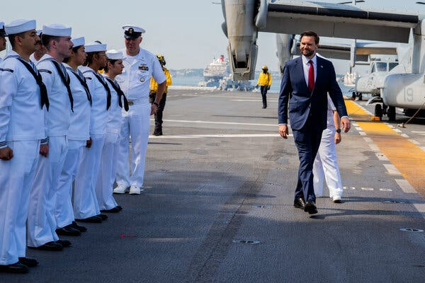
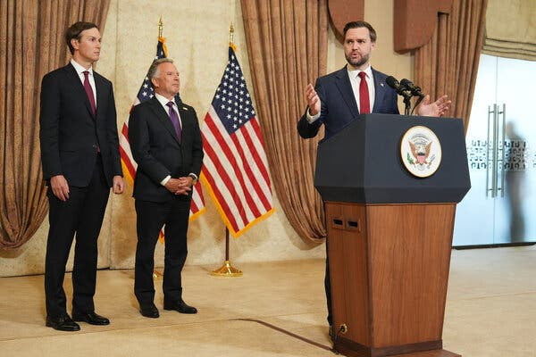
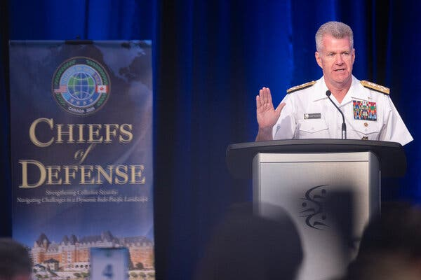

Vice President JD Vance took the unusual step over the spring and summer of calling U.S. military commanders in the Middle East, Europe and Asia directly, seeking their unvarnished assessments of the Iran war, according to current and former officials.
Mr. Vance, who opposed the war from the outset and was charged by President Trump with helping to end the conflict, wanted the commanders’ individual judgments, in their own words, before they were consolidated into a Pentagon view.
The conversations delved into an array of issues related to the war, including its objectives, tactics, casualty estimates, what the Iranians would do in the Strait of Hormuz, how adaptable they had become and how much punishment their government could absorb. Mr. Vance also asked for a detailed accounting of what remained in the commanders’ stockpiles, and how the transfer of weapons to the Middle East would affect their ability to deter China, Russia and North Korea.
On that last point, the commanders were blunt. They were most worried about their depleted stocks of Patriot interceptors, the backbone of their air defenses. By late spring, one theater was down to fewer than 100 of them. The war had also exhausted the theater’s supplies of the Army Tactical Missile Systems, which can reach 190 miles, along with stores of the Precision Strike Missiles, which were meant to replace them. Stocks of critical munitions such as these, they told the vice president, were the lowest they had ever seen.
This account is based on interviews with more than a half-dozen current and former officials, who were granted anonymity to disclose sensitive information.
Mr. Vance came away from some of his conversations with deep concerns about the overall strategy and the prospects for success, according to people who spoke to him. The assessments made clear the extraordinary amount of pain the Iranian government was prepared to endure in its fight for survival, and the limited supply of U.S. defensive weapons available to block Iran’s retaliatory strikes, or to deal with threats elsewhere.
The vice president incorporated these lessons into his private talks with Mr. Trump and their inner circle. At the same time, the president was hearing more in his briefings from Gen. Dan Caine, the chairman of the Joint Chiefs of Staff, about the strain on U.S. stockpiles and the resilience of Iranian forces, which Mr. Trump initially found difficult to believe.

The officials’ accounts, taken together, show how Mr. Vance has sought to surface a greater level of detail and nuance about the war. They also help to flesh out hotly debated questions about what kinds of information about the war Mr. Trump is receiving, and from whom. And for Mr. Vance, who had only limited national security experience before he became vice president, they show how he is now immersed in a costly and inconclusive war that could shadow him in a potential 2028 presidential campaign.
There was a gulf between the sobering private assessments that Mr. Vance received and what top administration officials, including the president and vice president, have said publicly. Mr. Trump has continued to falsely claim that the United States has already won the war, that the Iranian military has been demolished and that there are no problems with U.S. weapons supplies. And Mr. Vance recently downplayed the idea that the United States was even engaged in a war.
Privately, the president has raged about media stories detailing the diminished stockpiles, calling journalists “treasonous” for reporting on the topic. In the wake of the coverage, government investigators subjected dozens of senior military officers at the Pentagon to polygraph tests. Other officials have worried about signaling weakness to China and Russia, who are closely surveilling U.S. stockpiles.
Mr. Vance’s calls to the commanders were made with the knowledge of the president; Defense Secretary Pete Hegseth; General Caine; Secretary of State Marco Rubio, who also serves as the national security adviser; and Susie Wiles, the White House chief of staff, according to officials with direct knowledge.
Sean Parnell, a Pentagon spokesman, said in a statement that “to ensure the president’s team receives all available data points regarding ongoing operations in the Middle East, the secretary has facilitated direct access to combatant commanders for the vice president and other senior White House leaders.”
Joseph Holstead, General Caine’s spokesman, said, “There is no gap in the military advice provided to the president, the vice president, and the secretary of war,” referring to the title Mr. Hegseth uses. Mr. Holstead added: “The chairman, joint staff, and combatant commanders are in direct and continuous communication, and their operational and strategic assessments inform the military options and advice provided to senior leaders.”
Steven Cheung, the White House communications director, said, “President Trump has built the most talented national security team in history. The entire team is laser focused on ensuring that the president has all the information he needs in order to deter America’s enemies. Everybody works in coordination with each other on that mission.”
Mr. Vance, who enlisted in the Marine Corps during the Iraq war, has told colleagues that he considers himself one of the president’s principal advisers on national security.
Luke Schroeder, Mr. Vance’s press secretary, said, “The vice president is thankful for the partnership of Secretary Hegseth and Chairman Caine. He views them as indispensable colleagues in advising the president and executing his decisions.”
Blunt and Unfiltered Opinions

Before the start of the war on Feb. 28, Mr. Hegseth and General Caine had restricted planning to an unusually small circle of officers at the Pentagon and in Central Command for operational security reasons, and to prevent potential leaks. Key officials, such as the Treasury and energy secretaries, were excluded from the prewar planning meetings.
That secrecy left commanders around the world largely in the dark until roughly a week before the bombs fell, when secret messages arrived from the Pentagon ordering them to transfer specified munitions, in specified quantities, to Central Command, which directs Middle East operations. No explanation was given, and none was needed.
Mr. Vance’s effort to collect more information on the war began early.
Within days of the start of the war, Mr. Vance told colleagues that he wanted more granular briefings to inform his views and to better advise Mr. Trump. General Caine, for his part, saw his job as providing the president with unbiased military options rather than advocacy. He would interpret Mr. Trump’s intentions and lay out ways for him to achieve them. For each option, he would highlight the secondary considerations, the risks and the potential implications.
But he would not tell the president which option to choose, according to officials with direct knowledge of his presentations. The vice president sought out uniformed military officers who would offer blunt and unfiltered opinions and recommendations, and he would incorporate what he heard into his own counsel to the president.
Mr. Vance’s opposition to the war was no secret inside the White House. In the weeks leading up to Feb. 28, he argued against the operation in meetings in the Oval Office and Situation Room, at times to Mr. Trump’s considerable irritation, according to officials who discussed the matter with the president. But once Mr. Trump made up his mind, Mr. Vance defended the decision in public, including during tense television interviews.
The vice president also became the public face of the peace effort, running a series of talks that yielded a memorandum of understanding in June. Its 60-day window closed in August with no agreement and with the two sides seemingly further apart than when the negotiations started.
Mr. Trump had not seriously contemplated the war lasting long enough to strain U.S. stockpiles. He was fresh off the success of the quick military strike to capture Venezuela’s leader, and was impressed by how the United States and Israel had combined to attack Iranian nuclear sites over 12 days the previous year. Before launching the war in Iran, he had privately expected the government there to collapse within days.
As Mr. Vance was making his calls, the fighting ran well past the roughly six-week window that Pentagon planners had initially budgeted for the campaign. Senior White House advisers beyond the vice president did not believe they had a clear-enough understanding of how much the strikes had changed the calculus of the government in Tehran.
As the war dragged on, commanders were ordered to transfer more of their munitions. They watched with alarm as their stockpiles dwindled.
By April, Mr. Trump could see the war was not going the way he had hoped. He authorized his team — including Mr. Vance, the president’s son-in-law Jared Kushner and the special envoy Steve Witkoff — to begin seeking a framework and negotiating a deal with Iran to end the conflict, an agreement that would leave the country’s authoritarians in control. The officials briefed on the calls with the commanders could not say what role, if any, the vice president’s findings played in the president’s shift toward diplomacy.
A Costly and Inconclusive War

Mr. Vance is hardly the first vice president to play an active role on national security. President Barack Obama chose Joseph R. Biden Jr. as his No. 2 for his foreign policy experience. And Vice President Dick Cheney was a driving force in launching and directing the Afghanistan and Iraq wars in the George W. Bush administration.
Mr. Vance reached out directly to Admiral Brad Cooper, who commands U.S. forces in the Middle East, and to officers in Europe and Asia — theaters not directly in the Iran fight but whose weapons and equipment have been drawn down to support it.
Chief among his private interlocutors was Admiral Samuel J. Paparo Jr., the head of the U.S. Pacific Command, who is responsible for all American military activity in the region where China is expanding its reach and directly challenging U.S. supremacy. Admiral Paparo brought experience directly relevant to the Iran war: He previously oversaw naval operations across the Middle East, the Red Sea and the Persian Gulf. (A spokesperson for Pacific Command declined to comment on the vice president’s communications with Admiral Paparo, referring questions to the White House.)
Mr. Vance has developed a reputation inside the Trump administration for steeping himself in operational detail, a habit that some officials admire and others regard as too much in the weeds. Where Mr. Trump works in a way that leaves even his aides guessing how he arrives at decisions, Mr. Vance obsessively tracks the daily minutiae, including military operations, the internal dynamics of the Iranian political system and the sourcing of intelligence assessments.
John Ratcliffe, the C.I.A. director, has given him direct access to agency analysts; Mr. Vance knows some of them by first name and calls their desks to ask about raw intelligence or items in his morning briefing, intelligence officials said.
To satisfy the vice president’s demands for details, Mr. Hegseth had the Office of Naval Intelligence write Mr. Vance daily reports on the Strait of Hormuz, which Mr. Trump’s other senior aides now receive as well, according to senior Pentagon officials.
These reports describe which ships are transiting the strait, their flags and their cargo. General Caine sends Mr. Vance previews and recaps of U.S. strikes in the detail normally reserved for the officers running them. (General Caine himself is known to reach out directly to senior C.I.A. officers, including station chiefs in conflict zones, in order to solicit their on-the-ground assessments, officials said.)
But such access is the exception. For most senior officials, information about the war remains hard to come by.